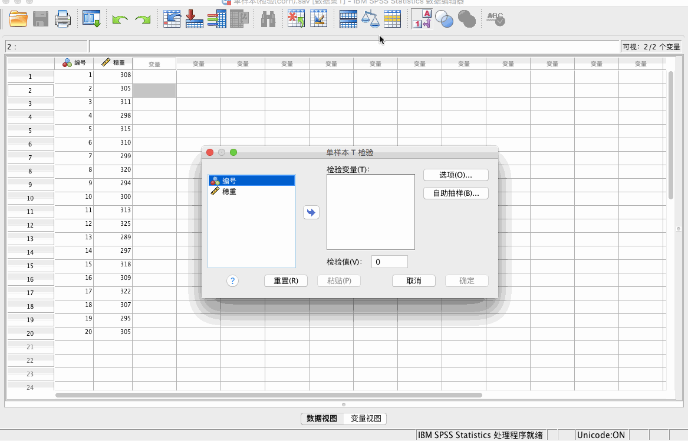
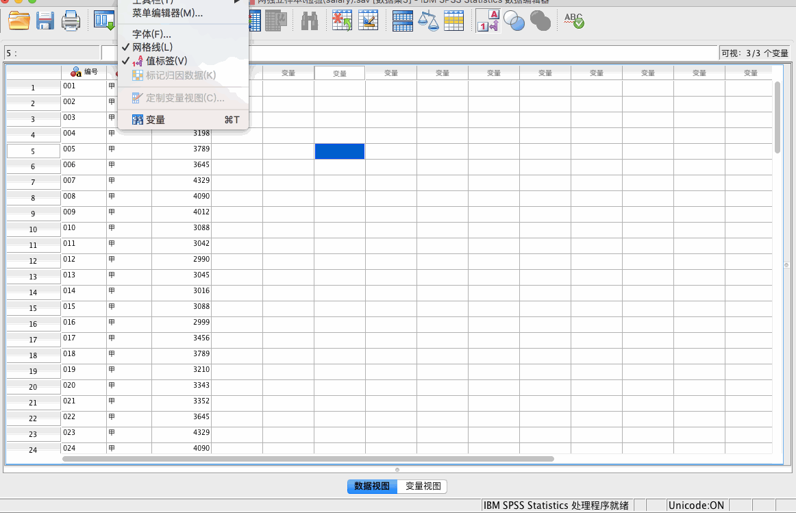
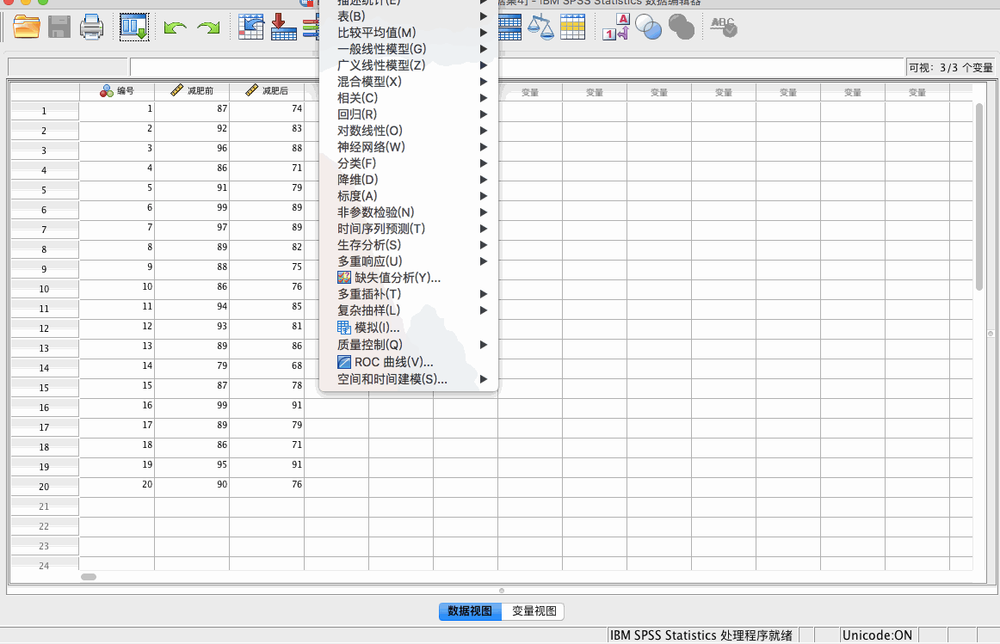
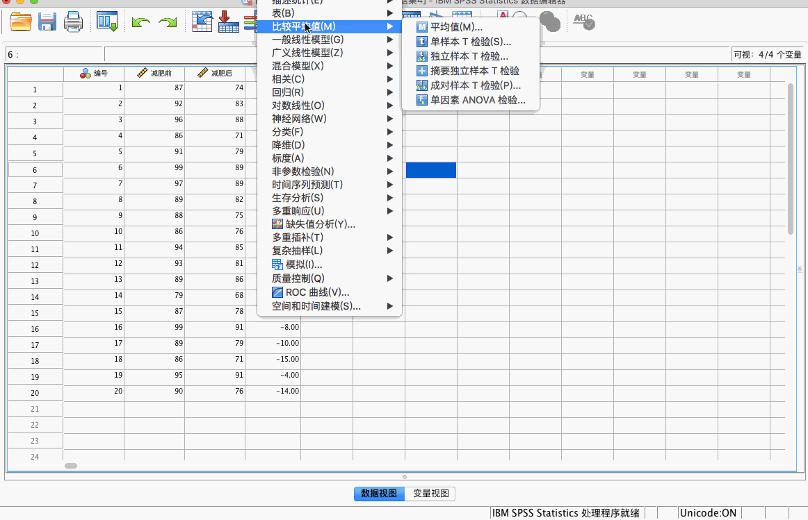
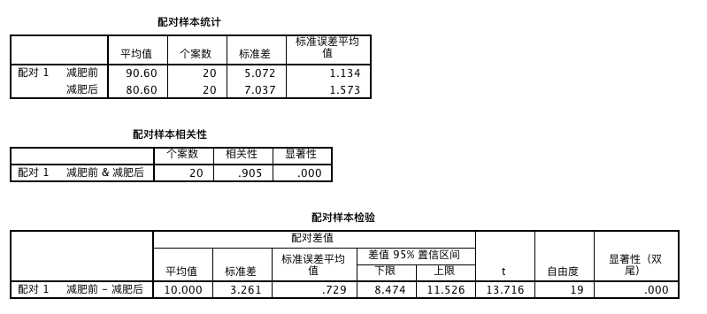
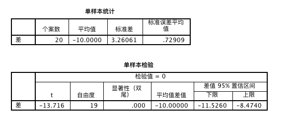

T 检验分类
单样本 T 检验
适用于一个样本群体某种属性的均值与某个特定值的比较；例如实验中，对做某种处理的一组小白鼠的体重与正常小白鼠体重（已知值）比较。
两独立样本 T 检验
前提：方差的齐性检验。
- 若方差相同，则使用同方差检验。
- 若方差不同，则使用异方差检验。
适用于两个相对独立的群体某个相同属性均值的比较，比如男性、女性群体的身高比较。
成对样本 T 检验
适用于成对的两组样本的比较，例如减肥前后两组体重值的比较。
SPSS 实现 T 检验
单样本 T 检验
例题：
常规种植条件下某玉米品种的平均穗重为𝝁𝟎_=300g。现在采用根外施肥（即将肥料制成液体养分，喷洒到玉米的叶面；常规种植是指将肥料施用于土壤中）后，调查了20个玉米棒，其穗重如下表所示。问：改用叶面施肥后，穗重是否显著（置信度为 95% 或者显著水平α=0.05）增加了？
分析步骤：
第一步：提出假设（SPSS无法直接进行单尾检验，可以借助双尾检验来完成）
𝐻_0 :μ=𝜇0=300 vs 𝐻_𝐴 :μ≠𝜇0=300
第二步：计算统计量t，并根据t分布的自由度和t值得到统计量p值
t=_𝐸(𝑥)−𝜇_0 =5.486
自由度=n-1=40-1=39 查自由度为39的t分布得到p值<0.001
第三步：根据p值判断原假设是否成立，并下结论
因为 p<0.001，所以 p<0.01，所以拒绝原假设，即认为减肥药有效果，具体是什么效果呢？查看计算得到的样本均值=3.702.所以减肥药具有增肥效果。
注：SPSS 无法进行单侧检验，可以利用双侧检验进行转换。如果单侧检验的置信度为 95%，那么可将置信度设为 90%。
SPSS 工具：
分析 - 比较平均值 - 单样本 T 检验

结论：
t 值对应的 3.124，小于临界值 3.13。或概率为 p = 0.006/2 = 0.003 < 0.05，因此拒绝原假设。
原假设为μ=𝜇_0=300，备择假设为μ≠𝜇_0=300，又因为平均值为 307 > 300，因此可以判断，μ 显著大于 300。
两独立样本 T 检验
例题：
某次调查研究中得到了一组关于甲、乙两个公司的员工的工资数据，想要比较甲乙两个公司的员工平均工资是否有显著差异。
分析步骤：
方差齐性检验
第一步：提出假设（原假设为方差相同）；
第二步：计算 F 统计量，并根据 F 分布得到相应的 p 值；
第三步：根据 p 值判断原假设是否成立，并下结论；如果 p 值大于 0.05 且比较大，认为方差是齐的，也就是说方差大致相等。
两独立样本t检验
第一步：提出假设（原假设为两个总体均值相同）；
第二步：计算 t 统计量，并根据 t 分布得到相应的 p 值；
第三步：根据 p 值判断原假设是否成立，并下结论；如果 p 值小于 0.05，那么拒绝原假设，即认为两个总体的均值存在显著的差异。
SPSS 工具：
方差齐性检验：
分析 - 比较平均值 - 独立样本 T 检验

注：在“独立样本检验”表格中有两行数据，第一行为方差齐性时参考的数据，第二行为方差不齐时参考的数据。
结论：
月收入水平均值乙公司比甲公司高了 400
考虑方差齐性检验，显著性水平 p ＝ 0.004 < 0.05，拒绝原假设，即方差是不齐的。因此需要参考第二行数据。
显著性为 0.004 < 0.05，拒绝原假设。因此认为甲乙公司的收入水平显著不同，又因为乙公司均值更高，因此我们认为乙公司的收入水平要显著高于甲公司。
成对样本 T 检验
成对样本 t 检验可以简化为单样本t检验：
- 成对样本 t 检验一般是检验配对的两组样本之间是否存在差异；
- 如果将配对的两组样本做减法，将得到一组数值，利用这组数据做与0进行比较的单样本 t 检验，所得结果与单样本t检验一致；
例题：
减肥药是否有效果
分析步骤：
第一步：提出假设（原假设为配对的两个总体均值相同）；
第二步：先计算配对两组数据的差，再计算 t 统计量，并根据 t 分布得到相应的 p 值；
第三步：根据 p 值判断原假设是否成立，并下结论；如果 p 值小于0.05，那么拒绝原假设，即认为两个配对总体的均值存在显著的差异。否则接受原假设。
SPSS 工具：
方法一：成对样本 t 检验
分析 - 比较平均值 - 成对样本 T 检验

方法二：单样本 t 检验
我们可以通过计算中间变量，即减肥前－减肥后的差值直接用来做单样本 T 检验。
转换 - 计算变量
再将差值与 0 进行单样本 t 检验。

结论：
方法一的结论：

减肥前平均值为 90.60，减肥后平均值为 80.60
p 值为 0.000 < 0.05 ，拒绝原假设，即减肥前后的体重显著不同。又因为减肥后的均值更小，因此减肥后的体重显著小于减肥前的体重。
方法二的结论：

p 值为 0.000，拒绝原假设，差值与 0 存在明显差异，说明减肥后－减肥前体重显著小于 0，即减肥后的体重显著小于减肥前的体重。